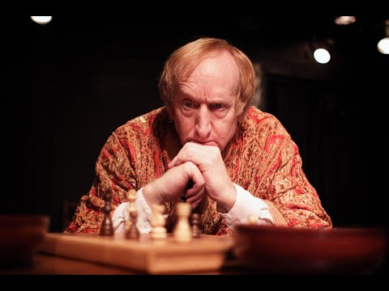

Dear participants,
Welcome to “Tales of Defiance to Mind Control in the Modern Age,” or “DMC” for short. I am looking forward to our learning together. I welcome your arguments, alternatives, and even complaints.
We meet in person on Mondays during Period 2 (11:10 a.m. to 12:35 p.m.) at 51 Sawyer Road, Room ?. Classes meet on November 2, 9, 16, 23, and 30.
Please feel free to contact me at axelrod@alumni.princeton.edu with comments, questions, requests for clarification or help, or to let me know if you will be late or absent for a class.
To help me verify that everyone’s email address works and to begin getting to know one another, please reply to this note with a brief email that includes your name, the town where you live, what sparked your interest in taking this class, and any background information you would like to share. If you are comfortable doing so, please include a picture of yourself to help me connect faces with names. Please also indicate if there is any information in your response that you do not want me to share with the class. I will combine the authorized information into a single email, which I plan to send to the class on November 1.
For each of the first four weeks, we will focus on a different tale of defiance to mind control. The final week will be devoted to discussion of the arc of all four stories as a whole.
Here is a link to the course website: course website. Parts of the website are under construction, but all the materials needed to prepare for Week 1 are available now. With the exception of personal information about students, such as the information in the “single email” mentioned above, all class materials will be accessible from the website. I will also send all essential material by email. The website has a header and a page that appears in a frame below the header. The header has a dropdown box in the upper left that allows one to select the page that appears in the frame below the header. When I email links to course website pages, I will send links to the standalone pages, without the course header.
Each of the four stories we will explore could be the basis of one or more full courses. Combining them means we won’t be able to cover the individual stories in great depth, but it will allow us to see an example of what I call an arc of dystopian stories. For each story, I will suggest a tool or “lens” we can use to examine it. These lenses are intended to foster thinking and discussion, not to create a barrier of abstraction.
The homework to prepare for our first class is the following, which is copied from the Week1 page. I have attached PDF versions of the Week1, Syllabus, Preface, and Notes on Notes from the Underground pages.

I look forward to hearing from you and seeing you in class,
Scott Axelrod